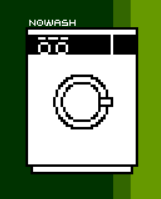
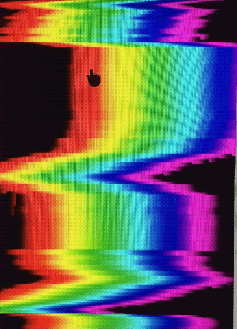

The File Room, Antoni Muntadas, 1994
steps to the moon , Gita Hashemi, 1997
Universal Net Cubism, Gruppe Or-Om, 2002
be a star, elisabeth smolarz, 2003
E.L.I. Nomad, Christian Croft, 2004

Nowash, Mashica, 2000
Edison Mobile Remake, catherine ramus, 2006

Broken Gradients, Manuel Fernández, 2012